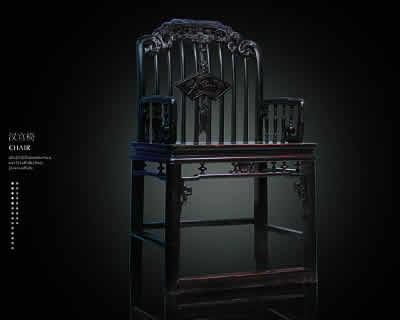
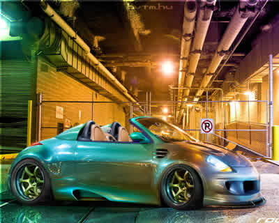

- 
- 
DEMO演示 如何做图片的无缝滚动
js代码
//无缝滚动
//原理：复制一份原ul形成新ul 当新ul向左走了一半的时候 后半是前半的重复 瞬间把新ul拉到起始位置 就形成了图片的无缝滚动
window.onload = function(){
var oDivx = document.getElementById("div2");
var oUl = oDivx.getElementsByTagName("ul")[0];
var aLi = oUl.getElementsByTagName("li");
var oBtn2 = document.getElementById("btn2");
var oBtn3 = document.getElementById("btn3");
var iSpeed = 2;
//复制一个ul 使得新ul变成原2个ul 便于后续无缝连接 ul宽度为单个li的宽度乘以li个数
oUl.innerHTML += oUl.innerHTML;
oUl.style.width = (aLi[0].offsetWidth) * (aLi.length) + "px";
oBtn2.onclick = function(){
iSpeed = -Math.abs(iSpeed);
}
oBtn3.onclick = function(){
iSpeed = Math.abs(iSpeed);
}
//鼠标移入移出 开启停止定时器
oDivx.onmouseover = function(){
clearInterval(timer);
}
oDivx.onmouseout = function(){
timer = setInterval(scroll,10);
}
//当新ul向左走了一半的时候 后半是前半的重复 瞬间把他拉到起始位置
var timer = setInterval(scroll,10);
function scroll(){
if(oUl.offsetLeft < -oUl.offsetWidth/2){
oUl.style.left = "0px";
}
else if(oUl.offsetLeft > 0){
//当新ul向右移动 一旦他的offseLeft大于0 也就是前半部分走到了div最左边的时候 瞬间拉回到后半部分
oUl.style.left = -oUl.offsetWidth/2 + "px";
}
//ul相对父元素div的offsetLeft在老版火狐下会加边框1px 导致不准确 注意查看offsetLeft
oUl.style.left = oUl.offsetLeft + iSpeed + "px";
}
}
//老版火狐下offsetLeft的小bug
//如果父元素div有1px的边框的话 div溢出不隐藏的时候offsetLeft很正常就是0
//但是一旦overflow:hidden后 在除了火狐以外所有浏览器还是0 可是在火狐下offsetLeft确变成-1了。
//一旦offsetLeft起始不是0那oUl.style.left = oUl.offsetLeft + iSpeed + "px"就完全没办法执行
//要不就不加边框，那就都是oUl.style.left = oUl.offsetLeft + iSpeed + "px"
//如果硬要加边框就只有div不加边框 在div外层再套一个父级 在这个父级上加边框(这是本例的最终解决办法)
html代码
<div id="jianrong">
<div id="div2">
<ul>
<li><img src="img/1.jpg"/></li>
<li><img src="img/2.jpg"/></li>
<li><img src="img/3.jpg"/></li>
<li><img src="img/4.jpg"/></li>
<li><img src="img/5.jpg"/></li>
</ul>
</div>
<input id="btn2" type="button" value="前进"/>
<input id="btn3" type="button" value="后退"/>
</div>
css代码
*{
margin:0px;
padding:0px;
}
ul{
list-style:none;
}
#jianrong{ /*为了兼容*/
border:1px solid black;
width:880px;
height:180px;
position:relative;
left:100px;
top:100px;
}
#div2{
width:880px;
height:180px;
position:relative;
left:0;
top:0;
/*溢出隐藏*/
overflow:hidden;
}
#div2 ul{
height:180px;
position:absolute;
left:0px;
top:0px;
}
#div2 ul li{
width:200px;
height:160px;
float:left;
padding:10px;
}
#div2 ul li img{
width:200px;
height:160px;
}
#btn2{
position:absolute;
left:450px;
top:-50px;
}
#btn3{
position:absolute;
left:530px;
top:-50px;
}